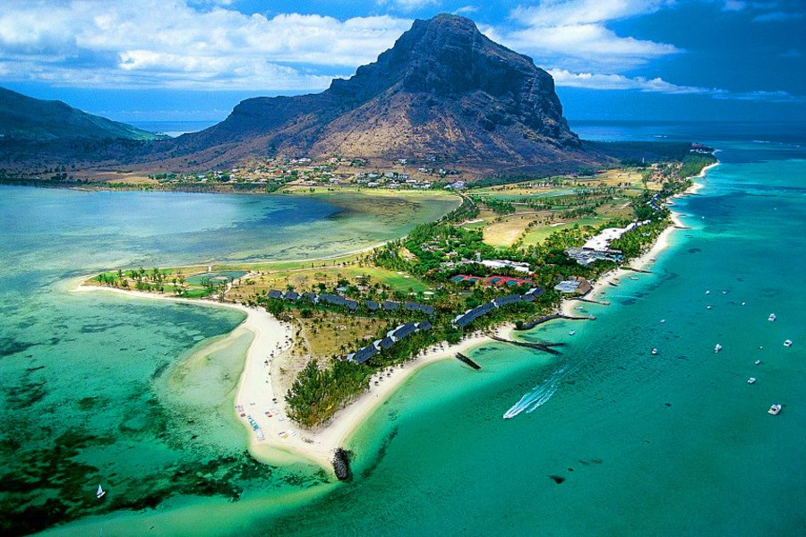

Необитаемый остров Маврикий был открыт в начале XVI века португальцами (по распространённой версии — Диогу Фернандишем в 1510 году) и получил название Сишна, по имени одного из португальских кораблей. В 1598 году остров был занят голландцами и получил название по латинской форме имени Морица Оранского.
Первоначально остров служил только временной стоянкой для торговых кораблей. Первое поселение голландцев на острове возникло в 1638 году. Стали создаваться плантации сахарного тростника, хлопчатника, табака, разводиться скот. Для этого были завезены рабы с Мадагаскара. Число жителей острова в годы голландской колонизации достигало около 300 человек, включая рабов. Однако в 1710 году голландцы покинули Маврикий, спасаясь от нашествия расплодившихся крыс, проникших на остров с европейских кораблей.
В 1715 году остров переходит во владение Франции и переименовывается в Иль-де-Франс. В 1721 году французы основали своё первое постоянное поселение на острове. За годы французской колонизации на Иль-де-Франс было построено несколько фортов, проложены дороги, сооружена судоверфь. В 1735 году население острова насчитывало почти 1 тыс. человек (200 белых, остальные — рабы из Африки и Мадагаскара). Во второй половине XVIII века на Иль-де-Франс переселились группы колонистов из французских провинций Бретань и Нормандия; одновременно были ввезены новые партии рабов из Африки и Мадагаскара. Труд рабов применялся на плантациях сахарного тростника, кофе; на острове стали выращивать кукурузу, маниок, гвоздичное дерево, индиго, различные овощи и фрукты. В 1802—1810 годах островом управлял генерал-губернатор Шарль Декан. Положение в Ост-Индии было в то время для французов непростым. Английский флот превосходил по силам французский, связь и тем более торговля с метрополией была нерегулярной. Тем не менее, в этих обстоятельствах генералу Декану, опираясь на поддержку французских плантаторов, удалось превратить Маврикий в стратегический опорный пункт Франции в Индийском океане. Не имея достаточного количества кораблей военного флота, Декан покровительствовал каперству, превратив Маврикий в базу пиратов, нападавших на английские торговые суда, и нарушавших английскую торговлю. Более того, именно на рейде столицы Маврикия французский флот командора Дюперре одержал одну из немногих побед над английским флотом, вошедшую в историю, как Битва в Гранд-Порт. Только в 1810 году, на восьмой год губернаторства Декана, англичане собрали достаточно сил, чтоб организовать атаку на обороняемый Деканом Иль-де-Франс. Сражение кончилось почётной капитуляцией французов, Декан и его люди были отправлены на английских судах во Францию.
После победы, одержанной английскими войсками над французскими гарнизонами, остров перешёл во владение Британии. В 1814
году по Парижскому договору Иль-де-Франс официально стал британской колонией, и ему возвращается название Маврикий.
К началу английской колонизации население Маврикия составляло около 70 тыс. человек (из них свыше 50 тыс. — рабы).
В 1835 году рабство было отменено. К тому времени число рабов составляло 77 тыс. (из 96 тыс. жителей). Для
сельскохозяйственных работ на Маврикий с 1830-х годов стали ввозить рабочих из Индии (ещё раньше, с 1829 года,
стали прибывать рабочие из Китая). К 1861 году число иммигрантов индийского происхождения достигло почти 300 тысяч.
На Маврикии быстро увеличивалось производство сахара, началось выращивание чая, табака.
С 1810 по 1968 годы англичанам принадлежал соседний остров Родригес, который стал владением государства Маврикий.
12 марта 1968 года Маврикий был объявлен независимой конституционной монархией в составе Британского Содружества.
Королевой Маврикия стала Елизавета II.
С начала 1968 года стали происходить столкновения между представителями азиатской части населения и неграми с мулатами.
В 1970—1971 годах прошли крупные забастовки во многих секторах экономики, с требованиями увеличения зарплаты.
В декабре
1971 правительство Маврикия ввело чрезвычайное положение, действовавшее непрерывно до марта 1978 года. Были арестованы
лидеры радикальной левой партии Маврикийское боевое движение (MMM), запрещена деятельность профсоюзов, связанных с этой
партией. В 1976 году партия MMM добилась успеха на выборах, но её приход к власти был заблокирован коалицией
лейбористской партии Сивусагура Рамгулама и правых социал-демократов Гаэтана Дюваля. По результатам выборов 1982
года партия MMM сформировала правительство во главе с Анирудом Джагнотом.
12 марта 1992 года Маврикий стал республикой.